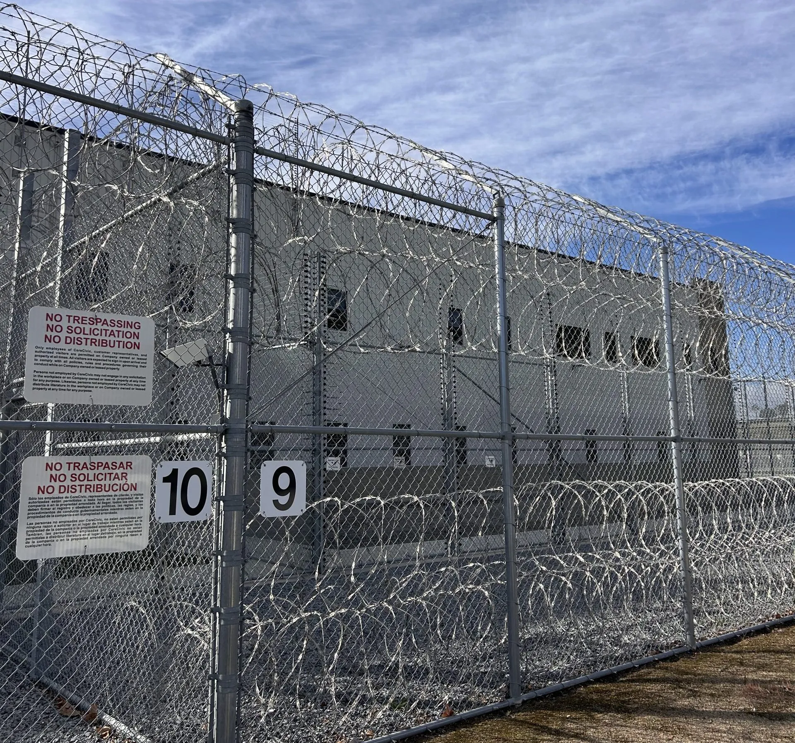
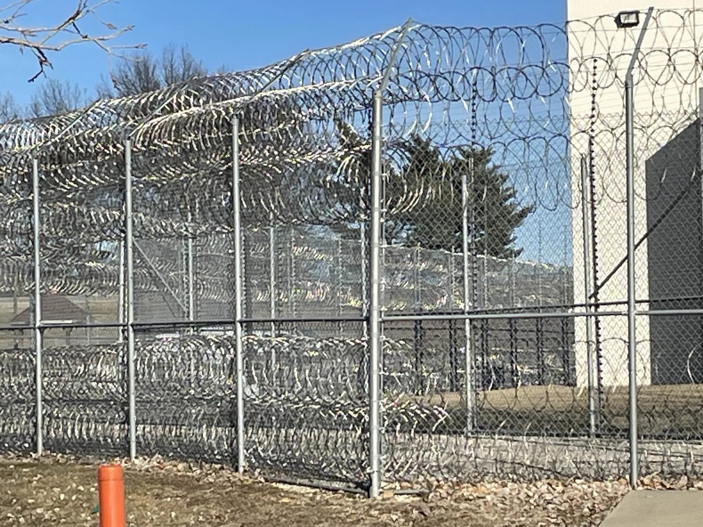

We often get asked the same question: "Isn't one high-quality fence enough?" The answer is: no. Especially at high-security facilities such as prisons, nuclear power plants, military bases, and data centers, a single fence can only stop an "ordinary person" — not a "prepared intruder." What truly creates a qualitative leap in security is the second fence line.
Today, from a professional fencing manufacturer's perspective, we break down exactly why a dual fence system makes intrusion (or escape) exponentially harder — and how we maximize the advantages of "two walls" through product design.
The Inherent Weakness of Single Fencing
Even the highest-specification single security fence on the market today — featuring 4.5-meter height, V-type anti-climb brackets, razor wire, and pulsed electronic detection — still has one fatal flaw in its physical logic: an attacker only needs to find one vulnerability.
- A camera in one corner gets obstructed
- A vibration sensor on one section degrades with age
- Night patrol gaps are precisely calculated
Once a single point is breached, the intruder can enter the inner area directly. For a single fence, breach equals success. This "single point of failure" vulnerability is a universal weakness of all single-layer defense systems.
How Dual Fencing Rewrites the Rules
With the introduction of a second fence line, the entire security model undergoes a fundamental transformation. The two fences typically maintain an 8–30 meter isolation zone between them, forming a complete "detect–confirm–intercept" loop.
Zone-Based Configuration
A properly designed dual fence system consists of three distinct zones, each with specific components and functions:

First Fence (Outer): The outer perimeter serves as the primary physical barrier. It typically features 4.5m anti-climb welded mesh panels topped with razor wire. Vibration fiber optic cables detect any physical impact or cutting attempts, with zones configured at 5-meter intervals for precise location identification.
Isolation Zone: The cleared area between fences is just as critical as the barriers themselves. This zone should be 8–30 meters wide, with bare soil or gravel ground to eliminate hiding spots. Ground radar and infrared beam detectors provide comprehensive coverage of this vulnerable area.
Second Fence (Inner): The inner perimeter provides the final line of defense. At 3.5 meters with double helix razor wire, it presents a formidable obstacle. Crucially, capacitive sensing technology detects human proximity without requiring physical contact, complementing the vibration detection on the outer fence.
Complementary Detection Logic
We insist on "different zones, different principles" detection configuration. The outer fence uses vibration detection to identify physical impact and cutting attempts. The inner fence employs electric field detection that senses changes in the human body's electric field.
These technologies cannot be bypassed with the same jamming device. This forces intruders to prepare two completely different countermeasure kits — which is practically impossible in real-world operations.
Time Window Compression
According to real-world data, breaching a qualified security fence takes an average of 3–5 minutes. But the isolation zone between two fences offers zero cover — the intruder must spend another 2–3 minutes breaching the second fence.
Standard security response time is typically within 1–2 minutes. That means before the intruder even finishes scaling the first wall, the patrol team has already arrived. The dual fence system forcibly creates a "guaranteed capture" time window.
Psychological and Physical Collapse
As manufacturers, we've visited multiple high-security facilities on-site. Security directors consistently report that even if someone manages to scale the first fence, upon seeing a second fence that is equally tall — or equipped with even more sensitive detection — they often panic, hesitate, and exhaust themselves. Over 70% of intruders abandon their attempt or make mistakes leading to capture within the isolation zone.
Applications Beyond Prisons
While prisons were the original adopters of dual fence systems, the applications have expanded significantly:
- Nuclear & Substation Facilities: Preventing sabotage and unauthorized access to critical infrastructure
- Airport Perimeters: Preventing runway incursions and securing flight operations areas
- Data Center Campuses: Physical isolation combined with logical protection for sensitive equipment
- Luxury Residential Estates: Aesthetic outer fence paired with invisible inner electronic fence

Implementation Best Practices
Successful dual fence implementation requires attention to several critical details:
- Proper post depth: Set posts at least 3 feet deep in concrete for stability, especially for outer fence bearing detection equipment
- Consistent isolation zone: Maintain clear 8–30m zone between fences with no vegetation or hiding spots
- Redundant power: Install backup power systems for detection equipment to ensure operation during outages
- Regular testing: Conduct monthly penetration tests and quarterly full system audits
The sense of security from two walls isn't 1+1 — it's adding a zero after the 1. One fence solves 90% of threats. Two fences make the remaining 10% nowhere to hide.
Need a custom dual fence security system for your high-security facility? At Kestrel Metal, we design and manufacture complete dual perimeter solutions including 358 security mesh, razor wire, vibration detection, and capacitive sensing systems. Our engineering team provides site assessment, system design, and installation support. Request a Quote today — we respond within 24 hours with detailed specifications and pricing for your project.